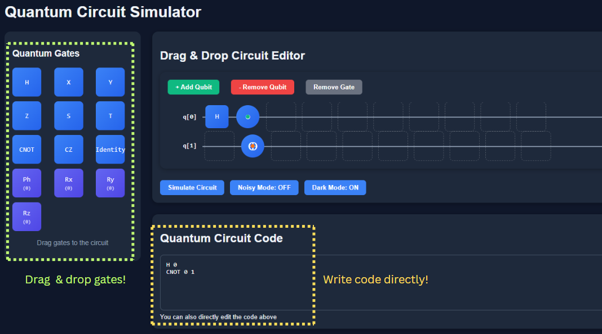

Welcome to the Documentation
Select a section from the sidebar.
Help Section
Here you’ll find practical guidance on how to use the simulator : from how to write quantum circuits and gate syntax, to enabling noisy mode.
Theoretical Documentation
This section helps you learn the core principles of quantum computing : what a qubit is, how gates operate, and how key algorithms work.
How to Simulate a Circuit
You can build and run a quantum circuit using two main methods:
- Code Editor: Directly type gate operations using a simple format like
H 0orCNOT 0 1. - Drag & Drop: Use the toolbox on the left to drag gates into the circuit grid.
Below is a screenshot of the simulator in action:

In this example, we apply a Hadamard (H) gate to q[0], placing it into superposition.
Then we use a CNOT gate with q[0] as control and q[1] as target.
This circuit creates an entangled Bell state:
(|00⟩ + |11⟩) / √2When measured, both qubits collapse to the same value — either both 0 or both 1 — with equal probability.
Once the circuit is built, click the Simulate Circuit button to run it and view the measurement results.
Gate Syntax
This simulator lets you program circuits using plain text. Each line corresponds to one gate instruction.
Format
GATE [angle] qubit(s)
- Single-qubit:
X 0,H 1 - Two-qubit:
CNOT 0 1,CZ 1 0 - Rotation/phase gates:
Rx 3.14 0,Rz 1.57 1
Examples
H 0 CNOT 0 1 X 0 CZ 0 1 Z 0 S 0 T 1 Identity 1 Ph 6 1 Rx 6 1 Ry 65 1 Rz 56 0
For gates that require an angle (like Rx, Rz, Ph), the angle is in radians and comes before the qubit index.
Noisy Mode
In the real world, quantum systems are subject to noise — unwanted interactions with their environment that cause errors. Noisy Mode in this simulator helps you understand how noise affects quantum computations by simulating realistic imperfections.
What Kind of Noise Is Simulated?
- Gate errors: Applied gates may randomly behave incorrectly.
- Measurement errors: The measured output bit may flip with some probability.
Why Use Noisy Mode?
- To simulate the behavior of real hardware like IBM Q or IonQ devices.
- To study how quantum algorithms degrade under imperfections.
- To prepare for quantum error correction or noise mitigation strategies.
When Should You Disable It?
- When you want ideal, mathematically perfect results.
- When debugging logic or learning basic quantum gates and circuits.
Summary
| Feature | Ideal Mode | Noisy Mode |
|---|---|---|
| Realistic errors | ❌ | ✅ |
| Good for learning basics | ✅ | ⚠️ |
| Used in real devices | ❌ | ✅ |
| Supports error analysis | ❌ | ✅ |
What is a Qubit?
A qubit (quantum bit) is the basic unit of quantum information. Unlike a classical bit which can be either 0 or 1,
a qubit can exist in a superposition of both states:
|ψ⟩ = α|0⟩ + β|1⟩
Here, α and β are complex numbers representing probability amplitudes. The probabilities of measuring |0⟩ and |1⟩ are given by:
Pr(0) = |α|², Pr(1) = |β|², where |α|² + |β|² = 1
Superposition
Superposition means the qubit is "in both states" until it is measured. For example, with equal amplitudes:
|ψ⟩ = (1/√2)|0⟩ + (1/√2)|1⟩
The measurement outcome is random, but with 50% chance for either 0 or 1.
Bloch Sphere
Any single qubit pure state can be represented as a point on the Bloch sphere:
|ψ⟩ = cos(θ/2)|0⟩ + e^{iφ}sin(θ/2)|1⟩
Where θ and φ are angles in 3D space. This is a powerful geometric way to understand qubit transformations.
Entanglement
Qubits can also be entangled. In entangled states, measuring one qubit affects the state of the other, no matter how far apart they are.
Example: (|00⟩ + |11⟩) / √2
Quantum Gates
Quantum gates are unitary operations that manipulate the state of one or more qubits. They are reversible (except measurement) and correspond to matrices that rotate the qubit on the Bloch sphere.
Single-Qubit Gates
Hadamard (H)
Places a qubit into equal superposition:
H = (1/√2) [ [1, 1],
[1, -1] ]
Transforms |0⟩ to (|0⟩ + |1⟩)/√2 and |1⟩ to (|0⟩ - |1⟩)/√2
Pauli Gates
- X gate – Bit-flip gate (like classical NOT)
X = [ [0, 1], [1, 0] ]
Y = [ [0, -i], [i, 0] ]
Z = [ [1, 0], [0, -1] ]
Identity Gate (I)
Leaves the qubit unchanged. Useful as a placeholder or timing alignment.
I = [ [1, 0], [0, 1] ]
Phase Gates
- S gate – Square root of Z. Adds a 90° phase to |1⟩.
S = [ [1, 0], [0, i] ]
T = [ [1, 0], [0, exp(iπ/4)] ]
Ph(θ) = [ [1, 0], [0, e^{iθ}] ]
Rotation Gates
These rotate the qubit around an axis on the Bloch sphere:
- Rx(θ) – Rotates around the X-axis
- Ry(θ) – Rotates around the Y-axis
- Rz(θ) – Rotates around the Z-axis
Two-Qubit Gates
CNOT (Controlled-NOT)
Flips the target qubit if the control qubit is in state |1⟩. Used to create entanglement.
CZ (Controlled-Z)
Applies a Z gate to the target qubit only if the control qubit is |1⟩. Adds a phase shift of -1 to the |11⟩ state.
SWAP
Exchanges the states of two qubits: SWAP(|ab⟩) = |ba⟩.
Measurement (Not a gate)
Collapses a qubit to |0⟩ or |1⟩ based on its probability amplitudes. This is the only non-reversible operation in quantum computing.
Common Quantum Algorithms
Grover’s Search Algorithm
Grover’s algorithm is used to search an unsorted database of N items in only √N queries, compared to N/2 queries classically on average. It uses an oracle to mark the solution and then amplifies its probability through a process called amplitude amplification. Although it's not exponential speedup, it's significant for certain types of search problems.
A typical Grover circuit includes Hadamard gates to create superposition, oracle function to flip the phase of the correct answer, and a diffusion operator to amplify it.
Quantum Teleportation
Quantum teleportation allows a qubit's quantum state to be transmitted from one location to another without physically sending the qubit itself. It requires a pair of entangled qubits shared between the sender (Alice) and the receiver (Bob).
Alice performs a Bell-state measurement on her qubit and the state she wants to teleport, then sends the two classical bits of result to Bob. Using those bits, Bob applies Pauli operations (X and/or Z) to reconstruct the original state on his end.
Note: Teleportation does not clone the state — the original is destroyed when measured.
BB84 Protocol
The BB84 protocol is the first quantum key distribution (QKD) scheme. It lets two parties (traditionally Alice and Bob) generate a shared secret key over an insecure quantum channel.
Alice sends qubits in one of two bases (e.g., rectilinear or diagonal), chosen randomly. Bob measures them using a random basis. They later publicly compare which bases they used, discarding mismatches. The remaining bits — when bases matched — form a raw key.
BB84’s security relies on the no-cloning theorem and the fact that any eavesdropping (by Eve) introduces detectable errors.
Shor’s Algorithm
Shor’s algorithm efficiently factors large integers, which threatens classical cryptographic schemes like RSA that rely on the hardness of factorization. It uses the quantum Fourier transform (QFT) to find the period of a modular exponential function, which reveals a factor of the number.
Classically, factoring a number N takes sub-exponential time. Shor’s algorithm reduces it to polynomial time: O((log N)^3), which is exponentially faster. Its impact is foundational in post-quantum cryptography research and the push for quantum-safe encryption.